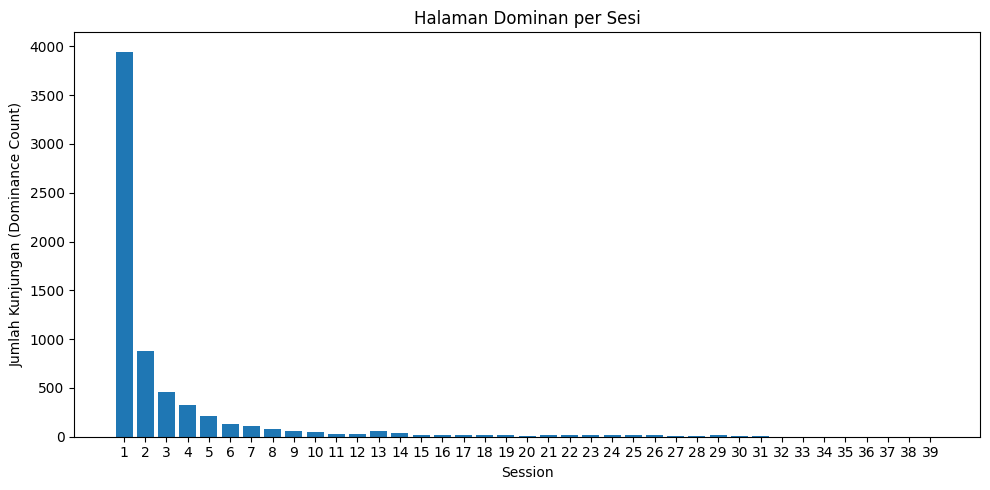

Usage Data Nasa#
import pandas as pd
import gzip
rows = []
with gzip.open("NASA_access_log_Jul95.gz", "rt", encoding="latin-1", errors="ignore") as f:
for line in f:
parts = line.strip().split()
rows.append(parts)
df = pd.DataFrame(rows)
df.to_csv("NASA_Jul95.csv", index=False)
print("File berhasil disimpan sebagai NASA_Jul95.csv")
File berhasil disimpan sebagai NASA_Jul95.csv
df.head()
| 0 | 1 | 2 | 3 | 4 | 5 | 6 | 7 | 8 | 9 | ... | 46 | 47 | 48 | 49 | 50 | 51 | 52 | 53 | 54 | 55 | |
|---|---|---|---|---|---|---|---|---|---|---|---|---|---|---|---|---|---|---|---|---|---|
| 0 | 199.72.81.55 | - | - | [01/Jul/1995:00:00:01 | -0400] | "GET | /history/apollo/ | HTTP/1.0" | 200 | 6245 | ... | None | None | None | None | None | None | None | None | None | None |
| 1 | unicomp6.unicomp.net | - | - | [01/Jul/1995:00:00:06 | -0400] | "GET | /shuttle/countdown/ | HTTP/1.0" | 200 | 3985 | ... | None | None | None | None | None | None | None | None | None | None |
| 2 | 199.120.110.21 | - | - | [01/Jul/1995:00:00:09 | -0400] | "GET | /shuttle/missions/sts-73/mission-sts-73.html | HTTP/1.0" | 200 | 4085 | ... | None | None | None | None | None | None | None | None | None | None |
| 3 | burger.letters.com | - | - | [01/Jul/1995:00:00:11 | -0400] | "GET | /shuttle/countdown/liftoff.html | HTTP/1.0" | 304 | 0 | ... | None | None | None | None | None | None | None | None | None | None |
| 4 | 199.120.110.21 | - | - | [01/Jul/1995:00:00:11 | -0400] | "GET | /shuttle/missions/sts-73/sts-73-patch-small.gif | HTTP/1.0" | 200 | 4179 | ... | None | None | None | None | None | None | None | None | None | None |
5 rows × 56 columns
import pandas as pd
# Baca CSV tanpa header
df = pd.read_csv("NASA_Jul95.csv", header=None, dtype=str, na_filter=False)
# Pastikan nama kolom 0..N-1
df.columns = range(df.shape[1])
# Hapus baris pertama yang hanya berisi angka 0 1 2 3 ...
df = df.drop(index=0).reset_index(drop=True)
# Ambil kolom 0–9
df_filtered = df.iloc[:, 0:10]
# Rename kolom sesuai permintaan
df_filtered = df_filtered.rename(columns={
0: "Remote host",
1: "logname",
2: "user",
3: "Request time",
# kolom 4 tetap
5: "Request method",
6: "Request URI",
7: "Request Protocol",
8: "Status",
9: "Size"
})
# Lihat hasil
df_filtered.head(10)
# Simpan ke CSV baru
df_filtered.to_csv("NASA_Jul95_filtered.csv", index=False)
print("File berhasil dibuat: NASA_Jul95_filtered.csv")
File berhasil dibuat: NASA_Jul95_filtered.csv
df_filtered.head(10)
| Remote host | logname | user | Request time | 4 | Request method | Request URI | Request Protocol | Status | Size | |
|---|---|---|---|---|---|---|---|---|---|---|
| 0 | 199.72.81.55 | - | - | [01/Jul/1995:00:00:01 | -0400] | "GET | /history/apollo/ | HTTP/1.0" | 200 | 6245 |
| 1 | unicomp6.unicomp.net | - | - | [01/Jul/1995:00:00:06 | -0400] | "GET | /shuttle/countdown/ | HTTP/1.0" | 200 | 3985 |
| 2 | 199.120.110.21 | - | - | [01/Jul/1995:00:00:09 | -0400] | "GET | /shuttle/missions/sts-73/mission-sts-73.html | HTTP/1.0" | 200 | 4085 |
| 3 | burger.letters.com | - | - | [01/Jul/1995:00:00:11 | -0400] | "GET | /shuttle/countdown/liftoff.html | HTTP/1.0" | 304 | 0 |
| 4 | 199.120.110.21 | - | - | [01/Jul/1995:00:00:11 | -0400] | "GET | /shuttle/missions/sts-73/sts-73-patch-small.gif | HTTP/1.0" | 200 | 4179 |
| 5 | burger.letters.com | - | - | [01/Jul/1995:00:00:12 | -0400] | "GET | /images/NASA-logosmall.gif | HTTP/1.0" | 304 | 0 |
| 6 | burger.letters.com | - | - | [01/Jul/1995:00:00:12 | -0400] | "GET | /shuttle/countdown/video/livevideo.gif | HTTP/1.0" | 200 | 0 |
| 7 | 205.212.115.106 | - | - | [01/Jul/1995:00:00:12 | -0400] | "GET | /shuttle/countdown/countdown.html | HTTP/1.0" | 200 | 3985 |
| 8 | d104.aa.net | - | - | [01/Jul/1995:00:00:13 | -0400] | "GET | /shuttle/countdown/ | HTTP/1.0" | 200 | 3985 |
| 9 | 129.94.144.152 | - | - | [01/Jul/1995:00:00:13 | -0400] | "GET | / | HTTP/1.0" | 200 | 7074 |
HTML only
import pandas as pd
# === 1️⃣ Baca file CSV ===
file_path = "NASA_Jul95_filtered.csv" # ubah jika file ada di lokasi lain
df = pd.read_csv(file_path)
# === 2️⃣ Pastikan kolom 'Request URI' ada ===
if 'Request URI' not in df.columns:
raise ValueError(f"Kolom 'Request URI' tidak ditemukan. Kolom yang tersedia: {df.columns.tolist()}")
# === 3️⃣ Filter hanya baris yang memiliki .html pada kolom 'Request URI' ===
filtered_df = df[df['Request URI'].str.contains(r'\.html$', na=False, case=False)]
# === 4️⃣ Simpan hasil filter ke file baru ===
output_path = "NASA_html_only.csv"
filtered_df.to_csv(output_path, index=False)
print(f"✅ File hasil filter berhasil dibuat: {output_path}")
print(f"Jumlah data asli: {len(df)}, jumlah data .html: {len(filtered_df)}")
✅ File hasil filter berhasil dibuat: NASA_html_only.csv
Jumlah data asli: 1891715, jumlah data .html: 417952
200.html only
import pandas as pd
# === 1️⃣ Baca file hasil filter sebelumnya ===
file_path = "NASA_html_only.csv" # pastikan file ini sudah ada dari langkah sebelumnya
df = pd.read_csv(file_path)
# === 2️⃣ Pastikan kolom 'Status' ada ===
if 'Status' not in df.columns:
raise ValueError(f"Kolom 'Status' tidak ditemukan. Kolom yang tersedia: {df.columns.tolist()}")
# === 3️⃣ Filter hanya baris dengan Status = 200 ===
filtered_df = df[df['Status'] == 200]
# === 4️⃣ Simpan hasil filter ke file baru ===
output_path = "NASA_html_status200.csv"
filtered_df.to_csv(output_path, index=False)
print(f"✅ File hasil filter status 200 berhasil dibuat: {output_path}")
print(f"Jumlah data asli: {len(df)}, jumlah data status 200: {len(filtered_df)}")
C:\Users\NITRO\AppData\Local\Temp\ipykernel_31780\623428601.py:5: DtypeWarning: Columns (8) have mixed types. Specify dtype option on import or set low_memory=False.
df = pd.read_csv(file_path)
✅ File hasil filter status 200 berhasil dibuat: NASA_html_status200.csv
Jumlah data asli: 417952, jumlah data status 200: 62435
Request Method
import pandas as pd
# === 1️⃣ Baca file hasil sebelumnya ===
file_path = "NASA_html_status200.csv"
df = pd.read_csv(file_path)
# === 2️⃣ Pastikan kolom 'Request method' ada ===
if 'Request method' not in df.columns:
raise ValueError(f"Kolom 'Request method' tidak ditemukan. Kolom yang tersedia: {df.columns.tolist()}")
# === 3️⃣ Filter hanya baris dengan Request method = 'GET' ===
filtered_df = df[df['Request method'].str.upper() == '"GET']
# === 4️⃣ Simpan hasil filter ke file baru ===
output_path = "NASA_html_status200_get.csv"
filtered_df.to_csv(output_path, index=False)
print(f"✅ File hasil filter GET berhasil dibuat: {output_path}")
print(f"Jumlah data asli: {len(df)}, jumlah data GET: {len(filtered_df)}")
print("Contoh 5 baris pertama hasil filter:")
filtered_df.head()
✅ File hasil filter GET berhasil dibuat: NASA_html_status200_get.csv
Jumlah data asli: 62435, jumlah data GET: 62265
Contoh 5 baris pertama hasil filter:
| Remote host | logname | user | Request time | 4 | Request method | Request URI | Request Protocol | Status | Size | |
|---|---|---|---|---|---|---|---|---|---|---|
| 0 | hplb.hpl.hp.com | - | - | [05/Jul/1995:03:49:50 | -0400] | "GET | /shuttle/missions/sts-71/movies/movies.html | HTTP/1.0" | 200 | 3089 |
| 1 | 10forward.ppp.america.com | - | - | [05/Jul/1995:03:49:57 | -0400] | "GET | /history/apollo/apollo-13/apollo-13.html | HTTP/1.0" | 200 | 18114 |
| 2 | pc111.twi.ch | - | - | [05/Jul/1995:03:50:07 | -0400] | "GET | /history/history.html | HTTP/1.0" | 200 | 1502 |
| 3 | aqua1e.cfi.waseda.ac.jp | - | - | [05/Jul/1995:03:50:11 | -0400] | "GET | /mdss/MDSS.html | HTTP/1.0" | 200 | 2727 |
| 4 | 132.146.65.211 | - | - | [05/Jul/1995:03:50:12 | -0400] | "GET | /ksc.html | HTTP/1.0" | 200 | 7074 |
Request Time
Mengubah Format Request Time yang awalnya 05/Jul/1995:03:49:50 menjadi format seperti ini 2009-10-15 02:00:24
import pandas as pd
# === 1. Baca file GET ===
df = pd.read_csv("NASA_html_status200_get.csv", dtype=str)
# Pastikan kolom 'Request time' ada
if "Request time" not in df.columns:
raise ValueError("Kolom 'Request time' tidak ditemukan!")
# === 2. Bersihkan format time ===
# Hilangkan karakter '[', ']' jika masih ada
df["Request time"] = df["Request time"].str.replace("[", "", regex=False)
df["Request time"] = df["Request time"].str.replace("]", "", regex=False)
# === 3. Convert ke datetime ===
# Format asli: 05/Jul/1995:03:49:50
df["Request time"] = pd.to_datetime(
df["Request time"],
format="%d/%b/%Y:%H:%M:%S",
errors="coerce" # jika gagal parse → NaT
)
# === 4. Ubah format output menjadi yyyy-mm-dd HH:MM:SS ===
df["Request time"] = df["Request time"].dt.strftime("%Y-%m-%d %H:%M:%S")
# === 5. Simpan ulang ===
output_path = "NASA_html_status200_get_converted.csv"
df.to_csv(output_path, index=False)
print(f"Format Request time berhasil diubah dan disimpan sebagai: {output_path}")
print(df.head())
Format Request time berhasil diubah dan disimpan sebagai: NASA_html_status200_get_converted.csv
Remote host logname user Request time 4 \
0 hplb.hpl.hp.com - - 1995-07-05 03:49:50 -0400]
1 10forward.ppp.america.com - - 1995-07-05 03:49:57 -0400]
2 pc111.twi.ch - - 1995-07-05 03:50:07 -0400]
3 aqua1e.cfi.waseda.ac.jp - - 1995-07-05 03:50:11 -0400]
4 132.146.65.211 - - 1995-07-05 03:50:12 -0400]
Request method Request URI \
0 "GET /shuttle/missions/sts-71/movies/movies.html
1 "GET /history/apollo/apollo-13/apollo-13.html
2 "GET /history/history.html
3 "GET /mdss/MDSS.html
4 "GET /ksc.html
Request Protocol Status Size
0 HTTP/1.0" 200 3089
1 HTTP/1.0" 200 18114
2 HTTP/1.0" 200 1502
3 HTTP/1.0" 200 2727
4 HTTP/1.0" 200 7074
Filter Berdasarkan IP Address(Remote host) dan User Agent(Request Protocol)
# Pastikan copy dataframe dulu (optional)
df = df.copy()
# Buat kolom user_id berdasarkan kombinasi Remote host + Request Protocol
df['user_id'] = df.groupby(['Remote host', 'Request Protocol']).ngroup() + 1
print(f"Total unique user ID: {df['user_id'].nunique()}")
Total unique user ID: 15481
import pandas as pd
df = pd.read_csv("NASA_html_status200_get_converted.csv", dtype=str)
# Buat user_id berdasarkan Remote host + Request Protocol
df["user_id"] = df.groupby(["Remote host", "Request Protocol"]).ngroup() + 1
print(f"Total unique user ID: {df['user_id'].nunique()}")
# Pilih dan urutkan kolom sesuai permintaan
result = df[
[
"Remote host",
"Request Protocol",
"Request time",
"user_id",
"Request URI",
"Status",
]
]
output_path = "NASA_html_status200_get_final.csv"
result.to_csv(output_path, index=False)
print(f"File CSV final berhasil dibuat: {output_path}")
Total unique user ID: 15481
File CSV final berhasil dibuat: NASA_html_status200_get_final.csv
result.head(10)
| Remote host | Request Protocol | Request time | user_id | Request URI | Status | |
|---|---|---|---|---|---|---|
| 0 | hplb.hpl.hp.com | HTTP/1.0" | 1995-07-05 03:49:50 | 8254 | /shuttle/missions/sts-71/movies/movies.html | 200 |
| 1 | 10forward.ppp.america.com | HTTP/1.0" | 1995-07-05 03:49:57 | 10 | /history/apollo/apollo-13/apollo-13.html | 200 |
| 2 | pc111.twi.ch | HTTP/1.0" | 1995-07-05 03:50:07 | 11610 | /history/history.html | 200 |
| 3 | aqua1e.cfi.waseda.ac.jp | HTTP/1.0" | 1995-07-05 03:50:11 | 4534 | /mdss/MDSS.html | 200 |
| 4 | 132.146.65.211 | HTTP/1.0" | 1995-07-05 03:50:12 | 823 | /ksc.html | 200 |
| 5 | ppp-s22.pinsight.com | HTTP/1.0" | 1995-07-05 03:50:20 | 12341 | /history/apollo/apollo.html | 200 |
| 6 | metz.une.edu.au | HTTP/1.0" | 1995-07-05 03:50:24 | 10378 | /history/apollo/apollo-17/apollo-17-info.html | 200 |
| 7 | 132.146.65.211 | HTTP/1.0" | 1995-07-05 03:50:25 | 823 | /facts/about_ksc.html | 200 |
| 8 | ppp-s22.pinsight.com | HTTP/1.0" | 1995-07-05 03:50:39 | 12341 | /history/apollo/apollo-1/apollo-1.html | 200 |
| 9 | 10forward.ppp.america.com | HTTP/1.0" | 1995-07-05 03:50:52 | 10 | /facilities/lc39a.html | 200 |
Mengurutkan Remote Host
import pandas as pd
# Baca file final sebelumnya
df = pd.read_csv("NASA_html_status200_get_final.csv", dtype=str)
# Pastikan Request time dalam datetime agar sorting benar
df["Request time"] = pd.to_datetime(df["Request time"], errors="coerce")
# Sorting: Remote host A-Z, lalu waktu dari yang paling awal
df_sorted = df.sort_values(by=["Remote host", "Request time"], ascending=[True, True])
# Simpan ke file baru
output_path = "NASA_html_status200_get_sorted.csv"
df_sorted.to_csv(output_path, index=False)
print(f"File sorted berhasil dibuat: {output_path}")
print(df_sorted.head(20))
File sorted berhasil dibuat: NASA_html_status200_get_sorted.csv
Remote host Request Protocol Request time \
33253 007.thegap.com HTTP/1.0" 1995-07-06 17:24:28
33289 007.thegap.com HTTP/1.0" 1995-07-06 17:26:24
33338 007.thegap.com HTTP/1.0" 1995-07-06 17:28:35
33548 007.thegap.com HTTP/1.0" 1995-07-06 17:37:44
35309 007.thegap.com HTTP/1.0" 1995-07-06 19:23:26
35352 007.thegap.com HTTP/1.0" 1995-07-06 19:26:24
35480 007.thegap.com HTTP/1.0" 1995-07-06 19:34:36
1465 01-dynamic-c.wokingham.luna.net HTTP/1.0" 1995-07-05 07:36:59
42250 02-dynamic-c.wokingham.luna.net HTTP/1.0" 1995-07-07 07:59:10
607 05-dynamic-c.rotterdam.luna.net HTTP/1.0" 1995-07-05 05:37:35
612 05-dynamic-c.rotterdam.luna.net HTTP/1.0" 1995-07-05 05:38:42
617 05-dynamic-c.rotterdam.luna.net HTTP/1.0" 1995-07-05 05:39:20
627 05-dynamic-c.rotterdam.luna.net HTTP/1.0" 1995-07-05 05:40:46
631 05-dynamic-c.rotterdam.luna.net HTTP/1.0" 1995-07-05 05:41:39
19717 05-dynamic-c.rotterdam.luna.net HTTP/1.0" 1995-07-06 03:56:35
14031 08-dynamic-c.rotterdam.luna.net HTTP/1.0" 1995-07-05 18:33:19
630 10-dynamic-c.rotterdam.luna.net HTTP/1.0" 1995-07-05 05:41:32
29336 100.144.med.umich.edu HTTP/1.0" 1995-07-06 14:31:09
31755 100.144.med.umich.edu HTTP/1.0" 1995-07-06 16:10:44
31807 100.144.med.umich.edu HTTP/1.0" 1995-07-06 16:12:54
user_id Request URI Status
33253 1 /shuttle/missions/sts-71/mission-sts-71.html 200
33289 1 /shuttle/missions/sts-71/sts-71-day-09-highlig... 200
33338 1 /shuttle/missions/sts-71/mission-sts-71.html 200
33548 1 /shuttle/missions/sts-71/images/images.html 200
35309 1 /shuttle/countdown/tour.html 200
35352 1 /facilities/mila.html 200
35480 1 /shuttle/technology/sts-newsref/sts-jsc.html 200
1465 2 /shuttle/missions/sts-71/movies/movies.html 200
42250 3 /shuttle/missions/sts-68/ksc-srl-image.html 200
607 4 /shuttle/missions/missions.html 200
612 4 /shuttle/missions/sts-61/mission-sts-61.html 200
617 4 /shuttle/missions/missions.html 200
627 4 /shuttle/missions/sts-67/mission-sts-67.html 200
631 4 /shuttle/missions/sts-71/mission-sts-71.html 200
19717 4 /shuttle/missions/sts-63/sts-63-info.html 200
14031 5 /history/apollo/apollo-11/apollo-11.html 200
630 6 /history/history.html 200
29336 7 /shuttle/missions/sts-71/images/images.html 200
31755 7 /history/apollo/apollo.html 200
31807 7 /history/gemini/gemini.html 200
Sesi tiap 35 menit
import pandas as pd
# Baca file sorted
df = pd.read_csv("NASA_html_status200_get_sorted.csv", dtype=str)
# Konversi kolom waktu
df["Request time"] = pd.to_datetime(df["Request time"], errors="coerce")
# Sort ulang untuk memastikan benar (Host + Time)
df = df.sort_values(by=["Remote host", "Request time"]).reset_index(drop=True)
# Buat kolom session
df["session"] = 0
# Durasi timeout session = 35 menit
session_timeout = pd.Timedelta(minutes=35)
# Loop per host
for host, group in df.groupby("Remote host").groups.items():
indices = df.loc[group].index.tolist() # indeks baris untuk host ini
current_session = 1 # mulai dari sesi 1
df.at[indices[0], "session"] = current_session
for i in range(1, len(indices)):
prev_time = df.loc[indices[i - 1], "Request time"]
curr_time = df.loc[indices[i], "Request time"]
# Jika selisih waktu lebih dari 35 menit → session baru
if curr_time - prev_time > session_timeout:
current_session += 1
df.at[indices[i], "session"] = current_session
# Simpan ke CSV baru
output_path = "NASA_html_status200_with_session.csv"
df.to_csv(output_path, index=False)
print(f"✔ Session berhasil dihitung dan file disimpan ke: {output_path}")
print(df.head(20))
✔ Session berhasil dihitung dan file disimpan ke: NASA_html_status200_with_session.csv
Remote host Request Protocol Request time \
0 007.thegap.com HTTP/1.0" 1995-07-06 17:24:28
1 007.thegap.com HTTP/1.0" 1995-07-06 17:26:24
2 007.thegap.com HTTP/1.0" 1995-07-06 17:28:35
3 007.thegap.com HTTP/1.0" 1995-07-06 17:37:44
4 007.thegap.com HTTP/1.0" 1995-07-06 19:23:26
5 007.thegap.com HTTP/1.0" 1995-07-06 19:26:24
6 007.thegap.com HTTP/1.0" 1995-07-06 19:34:36
7 01-dynamic-c.wokingham.luna.net HTTP/1.0" 1995-07-05 07:36:59
8 02-dynamic-c.wokingham.luna.net HTTP/1.0" 1995-07-07 07:59:10
9 05-dynamic-c.rotterdam.luna.net HTTP/1.0" 1995-07-05 05:37:35
10 05-dynamic-c.rotterdam.luna.net HTTP/1.0" 1995-07-05 05:38:42
11 05-dynamic-c.rotterdam.luna.net HTTP/1.0" 1995-07-05 05:39:20
12 05-dynamic-c.rotterdam.luna.net HTTP/1.0" 1995-07-05 05:40:46
13 05-dynamic-c.rotterdam.luna.net HTTP/1.0" 1995-07-05 05:41:39
14 05-dynamic-c.rotterdam.luna.net HTTP/1.0" 1995-07-06 03:56:35
15 08-dynamic-c.rotterdam.luna.net HTTP/1.0" 1995-07-05 18:33:19
16 10-dynamic-c.rotterdam.luna.net HTTP/1.0" 1995-07-05 05:41:32
17 100.144.med.umich.edu HTTP/1.0" 1995-07-06 14:31:09
18 100.144.med.umich.edu HTTP/1.0" 1995-07-06 16:10:44
19 100.144.med.umich.edu HTTP/1.0" 1995-07-06 16:12:54
user_id Request URI Status session
0 1 /shuttle/missions/sts-71/mission-sts-71.html 200 1
1 1 /shuttle/missions/sts-71/sts-71-day-09-highlig... 200 1
2 1 /shuttle/missions/sts-71/mission-sts-71.html 200 1
3 1 /shuttle/missions/sts-71/images/images.html 200 1
4 1 /shuttle/countdown/tour.html 200 2
5 1 /facilities/mila.html 200 2
6 1 /shuttle/technology/sts-newsref/sts-jsc.html 200 2
7 2 /shuttle/missions/sts-71/movies/movies.html 200 1
8 3 /shuttle/missions/sts-68/ksc-srl-image.html 200 1
9 4 /shuttle/missions/missions.html 200 1
10 4 /shuttle/missions/sts-61/mission-sts-61.html 200 1
11 4 /shuttle/missions/missions.html 200 1
12 4 /shuttle/missions/sts-67/mission-sts-67.html 200 1
13 4 /shuttle/missions/sts-71/mission-sts-71.html 200 1
14 4 /shuttle/missions/sts-63/sts-63-info.html 200 2
15 5 /history/apollo/apollo-11/apollo-11.html 200 1
16 6 /history/history.html 200 1
17 7 /shuttle/missions/sts-71/images/images.html 200 1
18 7 /history/apollo/apollo.html 200 2
19 7 /history/gemini/gemini.html 200 2
df.head()
| Remote host | Request Protocol | Request time | user_id | Request URI | Status | session | |
|---|---|---|---|---|---|---|---|
| 0 | 007.thegap.com | HTTP/1.0" | 1995-07-06 17:24:28 | 1 | /shuttle/missions/sts-71/mission-sts-71.html | 200 | 1 |
| 1 | 007.thegap.com | HTTP/1.0" | 1995-07-06 17:26:24 | 1 | /shuttle/missions/sts-71/sts-71-day-09-highlig... | 200 | 1 |
| 2 | 007.thegap.com | HTTP/1.0" | 1995-07-06 17:28:35 | 1 | /shuttle/missions/sts-71/mission-sts-71.html | 200 | 1 |
| 3 | 007.thegap.com | HTTP/1.0" | 1995-07-06 17:37:44 | 1 | /shuttle/missions/sts-71/images/images.html | 200 | 1 |
| 4 | 007.thegap.com | HTTP/1.0" | 1995-07-06 19:23:26 | 1 | /shuttle/countdown/tour.html | 200 | 2 |
Matrix sesi
from scipy.sparse import coo_matrix
import pandas as pd
def create_matrix(df_sessionized):
"""
Membuat matriks Sesi x Halaman dari data yang sudah disesikan.
Satu baris = satu sesi (user), satu kolom = halaman (Request URI).
Nilai 1 = halaman dikunjungi dalam sesi tersebut.
"""
if df_sessionized is None:
return None
print("\nMembuat matriks Sesi x Halaman ...")
# Perbaikan: gunakan kolom yang benar
session_info = (
df_sessionized[['session', 'Remote host']]
.drop_duplicates()
.sort_values(by=['session', 'Remote host'])
.reset_index(drop=True)
)
# Membuat key unik antar sesi
session_info['Session_Key'] = (
session_info['session'].astype(str) + '_' + session_info['Remote host']
)
# Ambil semua URI unik
unique_uris = df_sessionized['Request URI'].unique()
# Mapping SessionKey dan URI ke index
session_key_to_idx = {
key: i for i, key in enumerate(session_info['Session_Key'])
}
uri_to_idx = {uri: i for i, uri in enumerate(unique_uris)}
# Mapping baris dataframe ke index
df_temp = df_sessionized.copy()
df_temp['Session_Key'] = (
df_temp['session'].astype(str) + '_' + df_temp['Remote host']
)
rows = df_temp['Session_Key'].map(session_key_to_idx).to_numpy()
cols = df_temp['Request URI'].map(uri_to_idx).to_numpy()
data = [1] * len(df_temp) # nilai matriks = 1
# Membuat sparse matrix COO
sparse_matrix = coo_matrix(
(data, (rows, cols)),
shape=(len(session_info), len(unique_uris))
).tocsr()
# Convert ke DataFrame biasa
final_output = pd.DataFrame(
sparse_matrix.toarray(),
index=session_info['Session_Key'],
columns=unique_uris
)
final_output = (final_output > 0).astype(int)
# Reset index untuk memecah SessionID dan IP
final_output = final_output.reset_index()
final_output[['session', 'Remote host']] = \
final_output['Session_Key'].str.split('_', n=1, expand=True)
final_output = final_output.drop(columns=['Session_Key'])
# Menempatkan Remote host di awal kolom
cols_order = ['session', 'Remote host'] + \
[c for c in final_output.columns if c not in ['session', 'Remote host']]
final_output = final_output[cols_order]
# Simpan ke CSV
try:
final_output.to_csv('hasil_matriks_sesiNASA.csv', index=False)
print("\n✔ Matriks berhasil disimpan menjadi: hasil_matriks_sesiNASA.csv")
except Exception as e:
print("\nGagal menyimpan file:", e)
return final_output
df_session = pd.read_csv("NASA_html_status200_with_session.csv")
final_matrix = create_matrix(df_session)
display(final_matrix)
Membuat matriks Sesi x Halaman ...
✔ Matriks berhasil disimpan menjadi: hasil_matriks_sesiNASA.csv
| session | Remote host | /shuttle/missions/sts-71/mission-sts-71.html | /shuttle/missions/sts-71/sts-71-day-09-highlights.html | /shuttle/missions/sts-71/images/images.html | /shuttle/countdown/tour.html | /facilities/mila.html | /shuttle/technology/sts-newsref/sts-jsc.html | /shuttle/missions/sts-71/movies/movies.html | /shuttle/missions/sts-68/ksc-srl-image.html | ... | /statistics/1994/Oct/Oct94_reverse_domains.html | /shuttle/missions/sts-39/sts-39-info.html | /shuttle/missions/41-b/41-b-info.html | /shuttle/missions/sts-47/sts-47-info.html | /shuttle/missions/61-c/61-c-info.html | /shuttle/missions/sts-33/sts-33-info.html | /msfc/visitor/visitors.html | /shuttle/missions/sts-2/sts-2-info.html | /shuttle/missions/sts-3/sts-3-info.html | /shuttle/missions/sts-5/sts-5-info.html | |
|---|---|---|---|---|---|---|---|---|---|---|---|---|---|---|---|---|---|---|---|---|---|
| 0 | 1 | 007.thegap.com | 1 | 1 | 1 | 0 | 0 | 0 | 0 | 0 | ... | 0 | 0 | 0 | 0 | 0 | 0 | 0 | 0 | 0 | 0 |
| 1 | 1 | 01-dynamic-c.wokingham.luna.net | 0 | 0 | 0 | 0 | 0 | 0 | 1 | 0 | ... | 0 | 0 | 0 | 0 | 0 | 0 | 0 | 0 | 0 | 0 |
| 2 | 1 | 02-dynamic-c.wokingham.luna.net | 0 | 0 | 0 | 0 | 0 | 0 | 0 | 1 | ... | 0 | 0 | 0 | 0 | 0 | 0 | 0 | 0 | 0 | 0 |
| 3 | 1 | 05-dynamic-c.rotterdam.luna.net | 1 | 0 | 0 | 0 | 0 | 0 | 0 | 0 | ... | 0 | 0 | 0 | 0 | 0 | 0 | 0 | 0 | 0 | 0 |
| 4 | 1 | 08-dynamic-c.rotterdam.luna.net | 0 | 0 | 0 | 0 | 0 | 0 | 0 | 0 | ... | 0 | 0 | 0 | 0 | 0 | 0 | 0 | 0 | 0 | 0 |
| ... | ... | ... | ... | ... | ... | ... | ... | ... | ... | ... | ... | ... | ... | ... | ... | ... | ... | ... | ... | ... | ... |
| 21410 | 37 | www-b6.proxy.aol.com | 1 | 0 | 0 | 0 | 0 | 0 | 0 | 0 | ... | 0 | 0 | 0 | 0 | 0 | 0 | 0 | 0 | 0 | 0 |
| 21411 | 37 | www-d1.proxy.aol.com | 0 | 0 | 0 | 0 | 0 | 0 | 0 | 0 | ... | 0 | 0 | 0 | 0 | 0 | 0 | 0 | 0 | 0 | 0 |
| 21412 | 38 | www-b6.proxy.aol.com | 0 | 0 | 1 | 0 | 0 | 0 | 0 | 0 | ... | 0 | 0 | 0 | 0 | 0 | 0 | 0 | 0 | 0 | 0 |
| 21413 | 38 | www-d1.proxy.aol.com | 0 | 0 | 0 | 0 | 0 | 0 | 0 | 0 | ... | 0 | 0 | 0 | 0 | 0 | 0 | 0 | 0 | 0 | 0 |
| 21414 | 39 | www-d1.proxy.aol.com | 0 | 0 | 0 | 0 | 0 | 0 | 0 | 0 | ... | 0 | 0 | 0 | 0 | 0 | 0 | 0 | 0 | 0 | 0 |
21415 rows × 589 columns
Hitung jumlah halaman untuk setiap sesi
# Hitung jumlah kunjungan tiap halaman dalam setiap sesi
page_count_per_session = (
df_session.groupby(['session', 'Request URI'])
.size()
.reset_index(name='page-view')
)
display(page_count_per_session)
| session | Request URI | page-view | |
|---|---|---|---|
| 0 | 1 | //ksc.html | 1 |
| 1 | 1 | //shuttle/missions/missions.html | 1 |
| 2 | 1 | /base-ops/procurement/procurement.html | 3 |
| 3 | 1 | /biomed/bibliography/biblio.html | 2 |
| 4 | 1 | /biomed/climate/airqual.html | 1 |
| ... | ... | ... | ... |
| 3985 | 38 | /shuttle/missions/sts-71/images/images.html | 1 |
| 3986 | 38 | /shuttle/missions/sts-9/mission-sts-9.html | 1 |
| 3987 | 38 | /statistics/1995/Jun/Jun95.html | 1 |
| 3988 | 38 | /statistics/statistics.html | 1 |
| 3989 | 39 | /history/apollo/apollo-11/apollo-11.html | 1 |
3990 rows × 3 columns
Identifikasi Halaman Dominan per Sesi
Subtask: Berdasarkan jumlah kunjungan, tentukan URI mana yang paling dominan (paling sering dikunjungi) untuk setiap sesi. Jika ada lebih dari satu URI dengan jumlah kunjungan tertinggi, ambil yang pertama ditemui.
# 1. Hitung jumlah kunjungan tiap URI dalam setiap sesi
page_count_per_session = (
df_session.groupby(['session', 'Request URI'])
.size()
.reset_index(name='dominance-count')
)
# 2. Untuk setiap sesi, ambil URI dengan jumlah kunjungan tertinggi
dominant_page_per_session = (
page_count_per_session.sort_values(['session', 'dominance-count'], ascending=[True, False])
.drop_duplicates(subset='session', keep='first')
.reset_index(drop=True)
)
display(dominant_page_per_session)
| session | Request URI | dominance-count | |
|---|---|---|---|
| 0 | 1 | /shuttle/missions/sts-71/images/images.html | 3947 |
| 1 | 2 | /ksc.html | 882 |
| 2 | 3 | /ksc.html | 454 |
| 3 | 4 | /ksc.html | 324 |
| 4 | 5 | /ksc.html | 215 |
| 5 | 6 | /ksc.html | 133 |
| 6 | 7 | /ksc.html | 109 |
| 7 | 8 | /ksc.html | 76 |
| 8 | 9 | /ksc.html | 60 |
| 9 | 10 | /ksc.html | 53 |
| 10 | 11 | /ksc.html | 31 |
| 11 | 12 | /ksc.html | 30 |
| 12 | 13 | /ksc.html | 62 |
| 13 | 14 | /ksc.html | 41 |
| 14 | 15 | /ksc.html | 22 |
| 15 | 16 | /ksc.html | 21 |
| 16 | 17 | /shuttle/missions/sts-71/images/images.html | 20 |
| 17 | 18 | /ksc.html | 18 |
| 18 | 19 | /ksc.html | 13 |
| 19 | 20 | /ksc.html | 10 |
| 20 | 21 | /ksc.html | 15 |
| 21 | 22 | /ksc.html | 14 |
| 22 | 23 | /ksc.html | 15 |
| 23 | 24 | /shuttle/missions/missions.html | 15 |
| 24 | 25 | /ksc.html | 17 |
| 25 | 26 | /ksc.html | 17 |
| 26 | 27 | /history/apollo/apollo-13/apollo-13.html | 10 |
| 27 | 28 | /ksc.html | 7 |
| 28 | 29 | /ksc.html | 13 |
| 29 | 30 | /shuttle/missions/sts-71/images/images.html | 9 |
| 30 | 31 | /shuttle/missions/missions.html | 7 |
| 31 | 32 | /shuttle/countdown/countdown.html | 2 |
| 32 | 33 | /facilities/lcc.html | 1 |
| 33 | 34 | /facilities/mlp.html | 1 |
| 34 | 35 | /shuttle/missions/sts-71/images/images.html | 2 |
| 35 | 36 | /history/apollo/apollo-13/apollo-13-info.html | 2 |
| 36 | 37 | /shuttle/missions/sts-66/mission-sts-66.html | 1 |
| 37 | 38 | /history/history.html | 2 |
| 38 | 39 | /history/apollo/apollo-11/apollo-11.html | 1 |
import pandas as pd
import matplotlib.pyplot as plt
# --- Gunakan dataframe hasilmu sendiri di sini ---
# dominant_page_per_session = your_dataframe_here
# Contoh struktur dataframe:
# dominant_page_per_session:
# session | Request URI | dominance-count
# --- Plot Diagram Batang Halaman Dominan per Sesi ---
plt.figure(figsize=(10, 5))
plt.bar(
dominant_page_per_session["session"],
dominant_page_per_session["dominance-count"]
)
plt.xlabel("Session")
plt.ylabel("Jumlah Kunjungan (Dominance Count)")
plt.title("Halaman Dominan per Sesi")
plt.xticks(dominant_page_per_session["session"])
plt.tight_layout()
plt.show()
